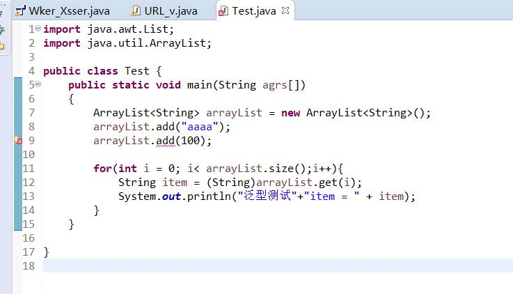
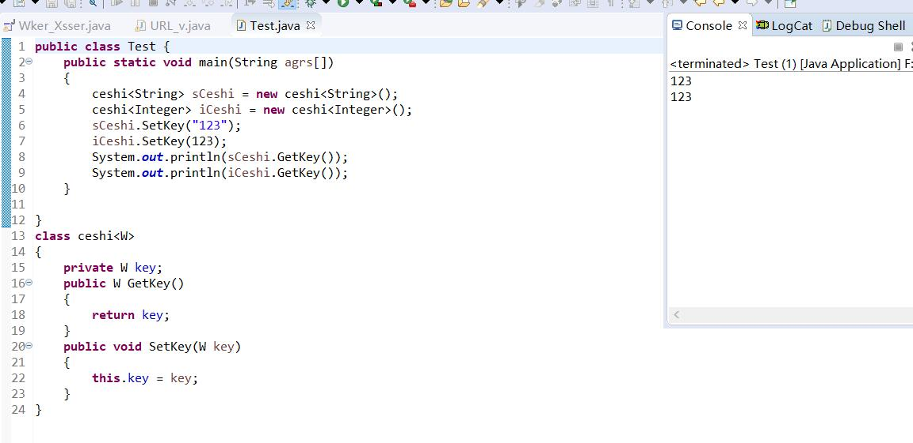

Java泛型
官方解释：
- 第一是泛化。可以用T代表任意类型Java语言中引入泛型是一个较大的功能增强不仅语言、类型系统和编译器有了较大的变化，以支持泛型，而且类库也进行了大翻修，所以许多重要的类，比如集合框架，都已经成为泛型化的了，这带来了很多好处。
- 第二是类型安全。泛型的一个主要目标就是提高ava程序的类型安全，使用泛型可以使编译器知道变量的类型限制，进而可以在更高程度上验证类型假设。如果不用泛型，则必须使用强制类型转换，而强制类型转换不安全，在运行期可能发生ClassCast Exception异常，如果使用泛型，则会在编译期就能发现该错误。
- 第三是消除强制类型转换。泛型可以消除源代码中的许多强制类型转换，这样可以使代码更加可读，并减少出错的机会。
- 第四是向后兼容。支持泛型的Java编译器（例如JDK1.5中的Javac）可以用来编译经过泛型扩充的Java程序（Generics Java程序），但是现有的没有使用泛型扩充的Java程序仍然可以用这些编译器来编译。
这个东西感觉上有点类似于C++的模板和static_cast这种静态转换，从其他的地方借鉴来的一些知识（部分知识来自于博客：https://blog.csdn.net/s10461/article/details/53941091）
避免编译报错
在我们使用容器的时候，由于ArrayList可以接受任何类型，所以导致我们有时会出现一些异常，下面是一个比较典型的例子：
1 | import java.awt.List; |
运行的时候会出现如下异常：
1 | Exception in thread "main" java.lang.ClassCastException: java.lang.Integer cannot be cast to java.lang.String |
意思就是说Int不能到String，这个时候就是在编译的时候不会报错，但是运行的时候确实会出现错误，那么我们如何更改比较好呢？
我们可以这样：

这个样子就比较好处理了，这个就类似于：static_cast，比较安全。
泛型类
这个听名字就和模板很像了，其实感觉起来就是那么一回事，简单地说就是参数化，我们给他一个String，里面的内容就是跟String有关的，那么具体怎么实现呢？
1 | public class Test { |

注意！不能对确切的泛型类型使用instanceof操作。如下面的操作是非法的，编译时会出错。instanceof就是查看是什么类，主要用在多态。
泛型接口
这个和上面类似，也就是定义的时候需要注意加上<>就可以了。implements Test<String>
1 | public interface Test<T> { |
泛型通配符
这个东西主要是为了我们的方法做准备，有的时候需要传入一个泛型参数，但是什么填充类型呢？
我们可以用?进行填充，看下面示例代码就很容易明白了：
1 | public class Test { |
先写这么多吧，下篇文章继续写！！！